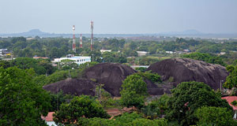
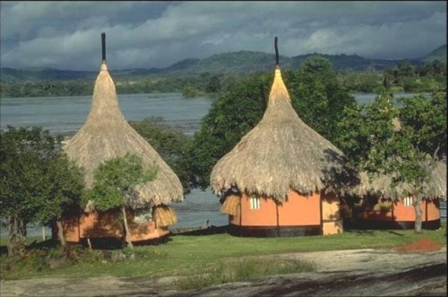
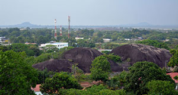
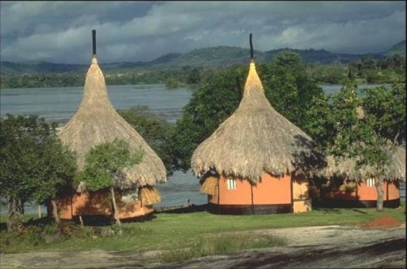
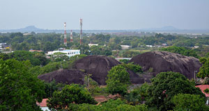
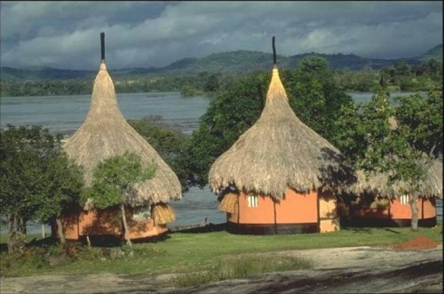

El río Tuparro es un importante afluente del río Orinoco que se encuentra en el departamento de Vichada, Colombia. Este río es conocido por atravesar el Parque Nacional Natural El Tuparro, una extensa área protegida que destaca por su rica biodiversidad y paisajes espectaculares.El río Tuparro se caracteriza por sus aguas cristalinas, rápidos y caídas de agua impresionantes, como los rápidos de Maipures, considerados unos de los más bellos del mundo por el explorador alemán Alexander von Humboldt. La región circundante al río es hogar de diversas especies de fauna y flora, incluyendo muchas que son endémicas de la Orinoquía.
Mamona o Ternera a la Llanera: También conocida como ternera a la llanera, es un plato emblemático de la región. Consiste en carne de res joven asada en varas a fuego lento, sazonada con sal y otros condimentos locales. Se acompaña tradicionalmente con yuca, plátano y papa.
Pescado Fresco del Río Tuparro: Debido a la abundancia de ríos, el pescado es una fuente principal de alimentación. Se consumen especies como el bocachico, la cachama y el bagre, preparados en sopas, fritos o asados.
Hayacas Llaneras: Similar a los tamales, las hayacas se preparan con masa de maíz y se rellenan con carne de cerdo, pollo, res, arvejas, zanahorias, y otros ingredientes, envueltas en hojas de plátano y cocidas al vapor.
Sancocho Llanero: Es una sopa espesa que se prepara con carne de res o de cerdo, yuca, plátano, papa, mazorca y otras verduras, sazonada con hierbas y especias locales.
Puerto Carreño, capital del departamento de Vichada en Colombia, se encuentra en la confluencia de los ríos Meta y Orinoco, cerca de la frontera con Venezuela. Es un importante centro fluvial y comercial, accesible por vía aérea y fluvial. Su economía se basa en la ganadería, pesca y agricultura. Destaca por su rica cultura llanera y comunidades indígenas, con atractivos turísticos como el Parque Nacional Natural El Tuparro y los rápidos de Maipures.
Mamona (Ternera a la Llanera): Carne de res joven asada en varas al fuego, servida con yuca, papa y plátano.
Pescado Fresco del Río Tuparro: Cachama y bocachico, asados o fritos, servidos con acompañamientos como plátano, yuca y arroz.
Hayacas Llaneras: Tamales de masa de maíz rellenos de carne y verduras, envueltos en hojas de plátano.
Sancocho de Pescado: Sopa con pescado, yuca, plátano, papa y mazorca.
Casuarito, ubicado en el departamento de Vichada, Colombia, es un tranquilo pueblo en la frontera con Venezuela, a la orilla del majestuoso río Orinoco. Con su entorno natural impresionante, dominado por exuberantes paisajes fluviales y selváticos, Casuarito ofrece una experiencia única de conexión con la naturaleza. Su economía gira en torno a la pesca, la agricultura y el comercio con Venezuela. La cultura local, enraizada en las tradiciones llaneras e indígenas, añade un toque distintivo a la atmósfera serena y acogedora de este pintoresco pueblo.
Pescado del Río: Dado su emplazamiento a orillas del río Orinoco, es común encontrar platos elaborados con pescado fresco como la cachama, el bocachico o el bagre, preparados asados, fritos o en sopa.
Carne a la Llanera: Platos como la mamona, preparada con carne de res asada lentamente a la parrilla, son populares y se sirven con acompañamientos como yuca, plátano y arroz.
Plátano y Yuca: Estos ingredientes son básicos en la cocina de la región y se preparan de diversas formas, ya sea fritos, cocidos o asados.
Arepa Llanera: Una variante de la arepa colombiana, hecha con harina de maíz y acompañada con queso, carne o huevos.
Sancocho: Una sopa espesa y nutritiva que suele llevar carne, verduras y tubérculos como yuca y plátano.
Bebidas Típicas:Bebidas como el guarapo de caña, masato (fermentado de arroz o yuca) o chicha, que complementan las comidas y refrescan en el clima cálido de la región.
Los rápidos de Maipures son una serie de impresionantes y poderosas cascadas ubicadas en el río Orinoco, en el departamento de Vichada, Colombia. Este espectacular fenómeno natural es uno de los principales atractivos turísticos de la región, ofreciendo a los visitantes la oportunidad de disfrutar de emocionantes actividades acuáticas y de contemplar la belleza indómita de la naturaleza en su estado más salvaje.


Plátano en Tentación: Una delicia dulce y reconfortante, el plátano en tentación consiste en plátanos maduros cortados en rodajas y cocidos en un almíbar aromatizado con canela, clavo de olor y cáscara de naranja. Se sirve caliente y espolvoreado con un toque de queso rallado, creando un postre exquisito y lleno de sabor.
Arepa Llanera con Carne Desmechada: La arepa llanera es una variante de la tradicional arepa colombiana, elaborada con harina de maíz y cocida a la parrilla hasta que adquiere una textura crujiente por fuera y suave por dentro. Se rellena con carne de res desmechada y suculenta, cocinada lentamente con cebolla, tomate y especias, ofreciendo un contraste de sabores y texturas irresistible.
Cachama Asada: La cachama, un pez típico de la región y abundante en las aguas del río Orinoco, se prepara asada a la parrilla con hierbas frescas y limón, resaltando su sabor suave y delicado. Se sirve con yuca al mojo, una guarnición de yuca cocida en una salsa de ajo, cebolla y cilantro.
Pescado en Salsa de Coco: Este exquisito plato resalta la frescura del pescado del río Orinoco al combinarlo con una deliciosa salsa de coco. El pescado fresco se cocina en una salsa cremosa elaborada con leche de coco, cebolla, ajo, pimiento y cilantro, que le aporta un sabor tropical y aromático. Se sirve acompañado de arroz blanco y una ensalada fresca de aguacate y tomate, creando una combinación de sabores y texturas que deleitará a los comensales con su exotismo y exquisitez.